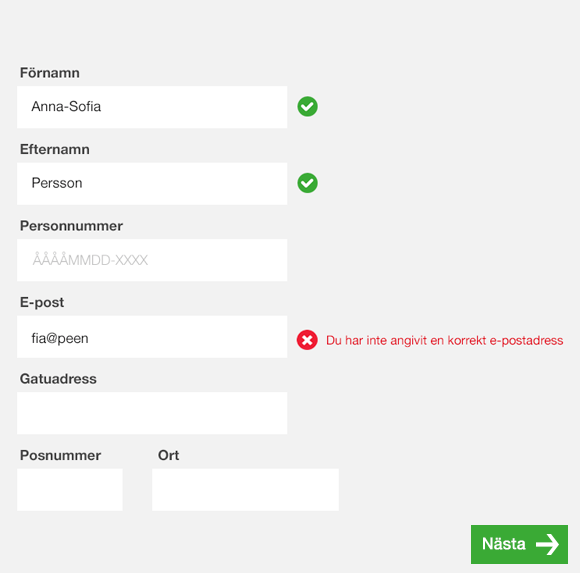

1.3.3 Sensory Characteristics
Instructions provided for understanding and operating content do not rely solely on sensory characteristics of components such as shape, color, size, visual location, orientation, or sound.
Use more than one sense for instructions
Sensory characteristics is an important but ridiculous-sounding phrase in web accessibility. It’s actually far less complicated than it sounds. The sensory characteristics of your website are things like shape, sound, position and size.
Exempel
Fel
Beskrivande text
Använd sökfältet uppe till höger på sidan
Formulär

I den här bilden får man inte mycket vägledning om vad som har blivit fel och om man inte ser särskilt bra är även pilen i botten otydlig utan en label.
Rätt
Beskrivande text
Sök genom att använda den gröna rektangeln med texten 'Sök' uppe till höger
Formulär
Ovanstående bild visar tydligare var felet är. Både med ett kryss i ikonen, färgen, placering samt en beskrivande text. De fält man har fyllt i korrekt får en grön bock.
Pilen i botten visar att man ska klicka på den för att gå vidare samt att texten väglerder användaren. Den gröna färgen hjälper också även om den kanske inte är helt rätt i det här fallet.